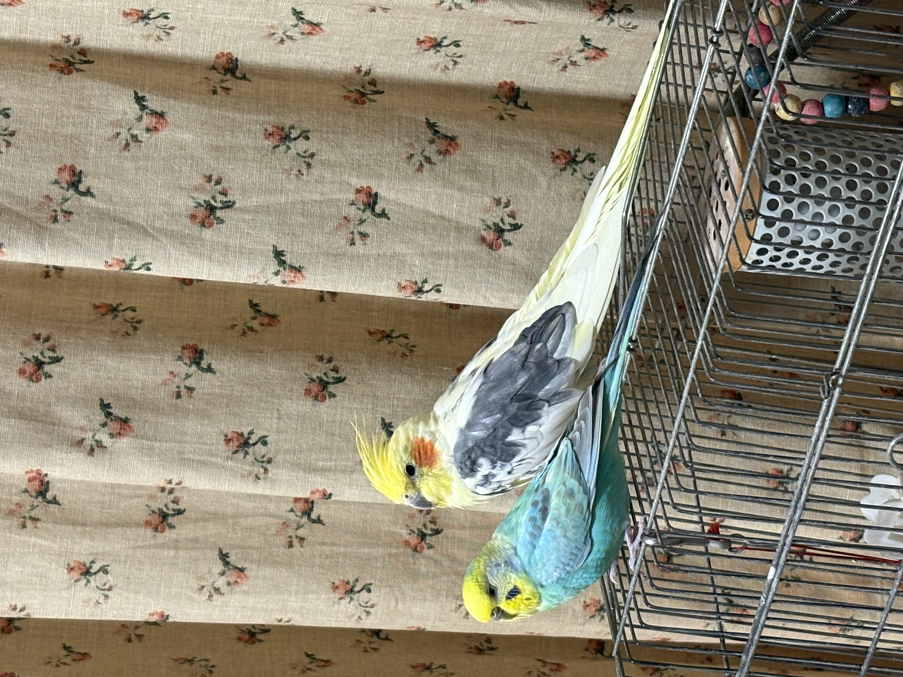
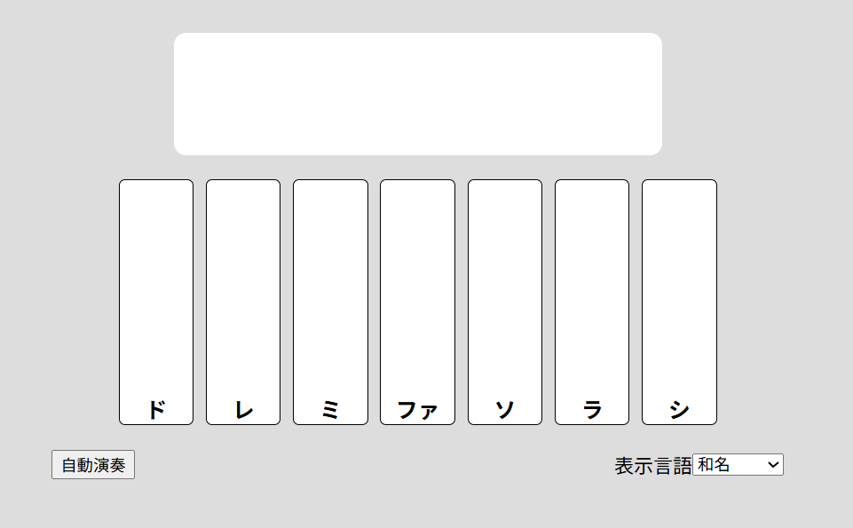
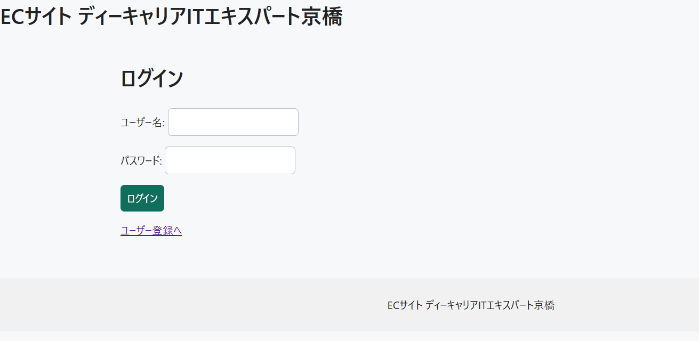
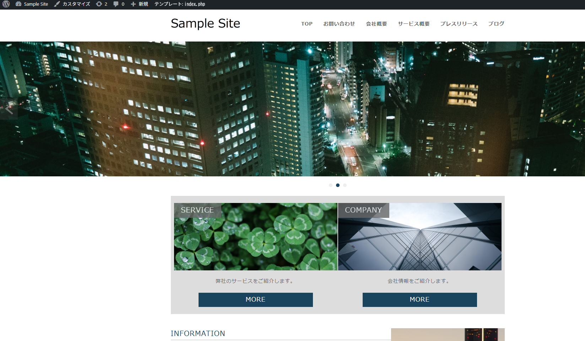
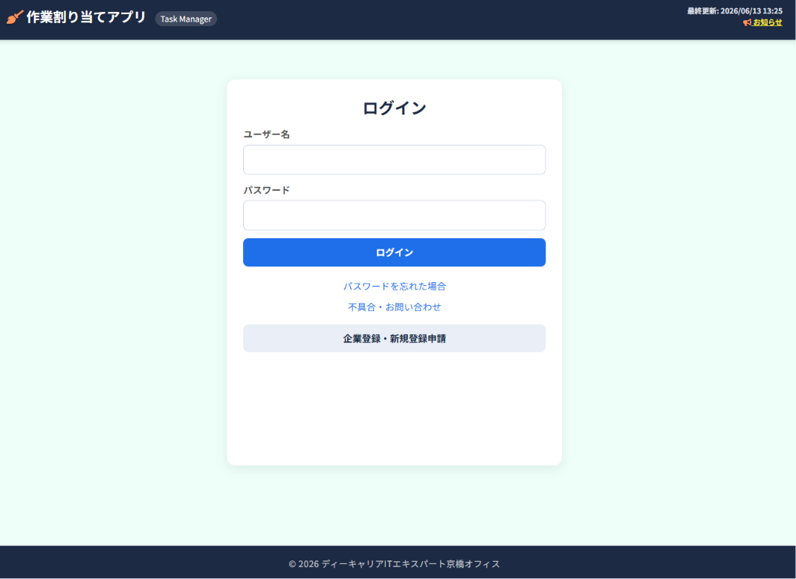
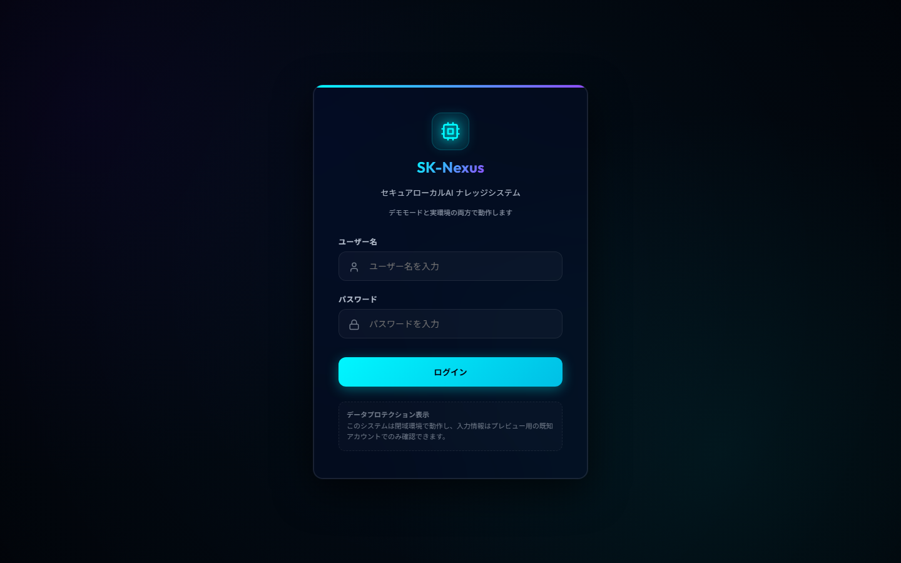

自己紹介
Self Introduction
私の名前は東晃太です。
大阪府大阪市出身で、現在はディーキャリアITエキスパートにて
プログラミング学習に取り組んでおります。
どうぞよろしくお願いいたします。

好きなもの・趣味
Favorites
- 音楽鑑賞
- ゲーム
- ペットのお世話
スキル
Skills
自己PR・強み
資格学習
プログラマーとして成長するため、また現場で活躍できる人材になるために、日々勉強しております。
ITパスポートや基本情報技術者試験の資格を保有。
AI活用・効率化
Gemini, Codex, AntigravityなどのAIを積極的に活用し、
効率的な作業および品質向上に努めています。
知的好奇心・探求心
プログラミングを学ぶ中で、自分の興味や関心を深め、
積極的に新しいことを学んでいます。
Python, TypeScript, Goなどバックエンドサイド、SQLでのDB活用・運用、AIを活用した開発などに興味があります。
思いやり
チームメンバーや組織を尊重し、常にアサーティブコミュニケーションを心がけています。
制作実績
Projects & Skills
JavaScript: 簡易ピアノ

- 📌 課題内容
- JavaScriptおよびjQueryを用いて、ブラウザ上で直感的に演奏できる簡易電子ピアノアプリを制作しました。
- 💡 工夫した点
-
- 日本語・英語・ドイツ語の「3言語表示切り替え機能」を搭載し、幅広いユーザー層に対応したグローバルな多言語設計（マルチリンガル対応）を実現しました。
- 打鍵時に鍵盤が沈むアニメーションとカラー変化をCSSで表現しました。
- 「きらきら星」もしくは「チューリップ」の曲が自動で演奏する機能を付けました。
- 🎮 操作手順
-
- 画面右下の言語選択メニューから、表示する言語を切り替えることができます。
- 画面上の白鍵をクリックすると、それぞれの音階の音が鳴ります。
- 自動演奏ボタンを押すと２曲のどちらかがランダムで演奏されます。
PHP/MySQL: ECサイト

- 📌 課題内容
- PHPバックエンドとMySQLデータベースを連携させ、会員登録・ログイン、商品一覧、カート機能、管理者向け商品管理（CRUD）機能などを統合した安全なECサイトの開発を行いました。
- 💡 工夫した点
-
- XSS（クロスサイトスクリプティング）対策としてのサニタイズ処理や、SQLインジェクションを防ぐプリペアードステートメントを徹底し、高いセキュリティ水準を確保しました。
- ログイン状態やユーザー権限（一般ユーザー/管理者）に応じたアクセス制限を細かく設定し、未認可アクセスの保護とページリダイレクトを実装しました。
- フォームの再送信による二重注文や多重登録を防止するため、PRG（Post-Redirect-Get）パターンを適用してシステム設計を行いました。
- 🔍 閲覧手順
-
⚠️ サイト閲覧には専用のパスワードが必要です。ログイン情報は下のGitHub(README)をご参照ください。
- 上の画像またはバナーリンクをクリックすると、ECサイトのトップページが別タブで表示されます。
- 新規ユーザーとしてアカウント登録を行ってログインし、商品のカート追加や購入完了までのフローをお試しいただけます。
- 管理者としてログインすることで、商品管理機能（追加・編集・削除）を行う管理者専用ページの機能をご確認いただけます。
WordPress: オリジナルテーマ制作（CMS化）

- 📌 課題内容
- 静的なHTML/CSSのデザインデータを分解・再構築し、PHPを用いてWordPressのオリジナルカスタムテーマ化（CMS化）を行いました。
- 💡 工夫した点
-
- ヘッダー、フッター、サイドバーなどの共通要素をコンポーネント化し、テンプレートファイルを細分化することで、コードの保守性と可読性を向上させました。
- お知らせ（カスタム投稿）や会社情報などの動的な変更箇所をWordPressの管理画面と連動させ、HTMLの知識がない管理者でも簡単かつ安全にサイト更新を行える設計にしました。
- 🔍 閲覧手順
-
⚠️ サイト閲覧には専用のパスワードが必要です。ログイン情報は下のGitHub(README)をご参照ください。
- 上の画像リンクからWordPressで動的化されたカスタムサイトを開くことができます。
- お知らせ記事などの動的投稿が自動反映され、美しく出力されている構成をご確認いただけます。
AI-coding/ロリポップサーバー: タスク割り当てアプリ (Task Manager)

- 📌 課題内容
- ローカル環境のみで動作し、ドキュメントや引き継ぎ仕様書が存在しなかった既存のタスク割り当てアプリを対象に、AIを活用したリバースエンジニアリングを実施。ソースコードの読解と分析に基づき仕様書を新規構築し、Webサーバー（ロリポップ!レンタルサーバー）へ実稼働デプロイを行いました。
- 💡 工夫した点
-
- ログイン機能、管理画面、自動通知メール送信システム、お問い合わせフォームなど、実稼働に必要な複数のバックエンドシステムを新規設計・構築しました。
- リファクタリングを徹底し、乱雑だったプログラムをモジュール化。可読性と今後の拡張性・保守性を大幅に高めました。
- 実装だけでなく、システム全体仕様書やデータベースのテーブル定義書などを自らゼロから書き起こし、高品質な開発ドキュメント群を整備しました。
- 🔍 操作手順／閲覧手順
-
- 上の画像リンクをクリックすると、本番サーバー上で稼働中の「タスク割り当てアプリ」ログイン画面が別タブで表示されます。
- 下の「タスク割り当てアプリのデモ画像」テキストリンクをクリックすると、ログイン後の直感的なスケジュール・タスク割付管理画面（デモ）をモーダルポップアップでご確認いただけます。
{kind=link}
AI-coding/フルスタック: セキュア・ローカルAIチャットシステム (SK-Nexus)

- 📌 課題内容
- 情報漏洩リスクを考慮し、外部APIへ一切データを送信せず「完全ローカル環境」で推論を行うRAG対応AIチャットボットをフルスクラッチで構築。社内文書（PDF/DOCX/CSV）を読み込ませ、その知識に基づいた回答を生成するシステムを開発しました。ローカルでの安定稼働に加え、最終的にOracle Cloud (OCI)環境へのデプロイと、Tailscaleを用いた安全な閉域網アクセスの構築までを達成しています。
- 💡 工夫した点
-
- ハイブリッド検索エンジンと完全ローカルLLM: ChromaDB（ベクトル検索）とSQLiteを統合したRAGエンジンを構築。Ollama経由で軽量モデル（
qwen3.5:4b等）を稼働させることで、12GB RAMの制約があるクラウド環境でもセキュアかつ高精度な応答を実現しました。 - フルスタックアーキテクチャの完成: フロントエンドはReact/Vite、バックエンドはFastAPIを採用。JWT認証、ユーザー別のチャットスレッド分離、SSEを利用したストリーミング応答など、実用的なUXを提供しています。
- インフラ構築とセキュアなクラウド移行: アプリケーション全体をDocker Composeでコンテナ化。OCIのARMインスタンス（Ubuntu）へデプロイし、Nginx経由での配信、およびTailscaleを利用したVPNアクセス網を構築して、外部からの不正アクセスを遮断しました。
- エンタープライズ向けの管理機能と監査: Fluent-bitによる監査ログ収集、ファイル名のサニタイズ、ロール別（一般・管理者）の画面制御を実装し、実際の業務利用に耐えうるセキュリティ体制を組み込みました。
- ハイブリッド検索エンジンと完全ローカルLLM: ChromaDB（ベクトル検索）とSQLiteを統合したRAGエンジンを構築。Ollama経由で軽量モデル（
- 🔍 操作手順／閲覧手順
-
- 下の「制作概要書・説明付き図版 (PDF)」リンクをクリックすると、AIチャットボットのシステム構成や画面イメージをまとめたドキュメントをご覧いただけます。
- ソースコードはGitHubリポジトリからご確認いただけます。